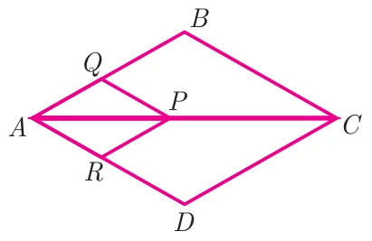
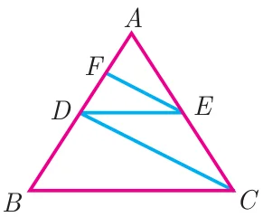
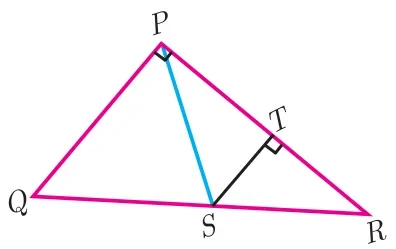

Exercise 4.2
- In \(\Delta ABC\), \(D\) and \(E\) are points on the sides \(AB\) and \(AC\) respectively such that \(DE \parallel BC\)
- If \(\dfrac{AD}{DB} = \dfrac{3}{4}\) and \(AC = 15\) cm find \(AE\).
- If \(AD = 8x - 7\), \(DB = 5x - 3\), \(AE = 4x - 3\) and \(EC = 3x - 1\), find the value of \(x\).
- ABCD is a trapezium in which \(AB \parallel DC\) and \(P, Q\) are points on \(AD\) and \(BC\) respectively, such that \(PQ \parallel DC\) if \(PD = 18\) cm, \(BQ = 35\) cm and \(QC = 15\) cm, find \(AD\).
- In \(\Delta ABC\), \(D\) and \(E\) are points on the sides \(AB\) and \(AC\) respectively. Show that \(DE \parallel BC\) if \(AB = 12\) cm, \(AD = 8\) cm, \(AE = 12\) cm and \(AC = 18\) cm.
- In fig. if \(PQ \parallel BC\) and \(PR \parallel CD\) prove that (i) \(\dfrac{AR}{AD} = \dfrac{AQ}{AB}\) (ii) \(\dfrac{QB}{AQ} = \dfrac{DR}{AR}\).

- Rhombus PQRB is inscribed in \(\Delta ABC\) such that \(\angle B\) is one of its angle. \(P\), \(Q\) and \(R\) lie on \(AB\), \(AC\) and \(BC\) respectively. If \(AB = 12\) cm and \(BC = 6\) cm, find the sides \(PQ\), \(RB\) of the rhombus.
- In trapezium \(ABCD\), \(AB \parallel DC\), \(E\) and \(F\) are points on non-parallel sides \(AD\) and \(BC\) respectively, such that \(EF \parallel AB\). Show that \(\dfrac{AE}{ED} = \dfrac{BF}{FC}\).
- In figure \(DE \parallel BC\) and \(CD \parallel EF\). Prove that \(AD^2 = AB \times AF\).

- Check whether \(AD\) is bisector of \(\angle A\) of \(\Delta ABC\) in each of the following
- \(AB = 5\) cm, \(AC = 10\) cm, \(BD = 1.5\) cm and \(CD = 3.5\) cm.
- \(AB = 4\) cm, \(AC = 6\) cm, \(BD = 1.6\) cm and \(CD = 2.4\) cm.
- In figure \(\angle QPR = 90^\circ\), PS is its bisector. If \(ST \perp PR\), prove that \(ST \times (PQ + PR) = PQ \times PR\).

- \(ABCD\) is a quadrilateral in which \(AB = AD\), the bisector of \(\angle BAC\) and \(\angle CAD\) intersect the sides \(BC\) and \(CD\) at the points \(E\) and \(F\) respectively. Prove that \(EF \parallel BD\).
- Construct a \(\Delta PQR\) which the base \(PQ = 4.5\) cm, \(\angle R = 35^\circ\) and the median \(RG\) from \(R\) to \(PQ\) is 6 cm.
- Construct a \(\Delta PQR\) in which \(QR = 5\) cm, \(\angle P = 40^\circ\) and the median \(PG\) from \(P\) to \(QR\) is 4.4 cm. Find the length of the altitude from \(P\) to \(QR\).
- Construct a \(\Delta PQR\) such that \(QR = 6.5\) cm, \(\angle P = 60^\circ\) and the altitude from \(P\) to \(QR\) is of length 4.5 cm.
- Construct a \(\Delta ABC\) such that \(AB = 5.5\) cm, \(\angle C = 25^\circ\) and the altitude from \(C\) to \(AB\) is 4 cm.
- Draw a triangle \(ABC\) of base \(BC = 5.6\) cm, \(\angle A = 40^\circ\) and the bisector of \(\angle A\) meets \(BC\) at \(D\) such that \(CD = 4\) cm.
- Draw \(\Delta PQR\) such that \(PQ = 6.8\) cm, vertical angle is \(50^\circ\) and the bisector of the vertical angle meets the base at \(D\) where \(PD = 5.2\) cm.